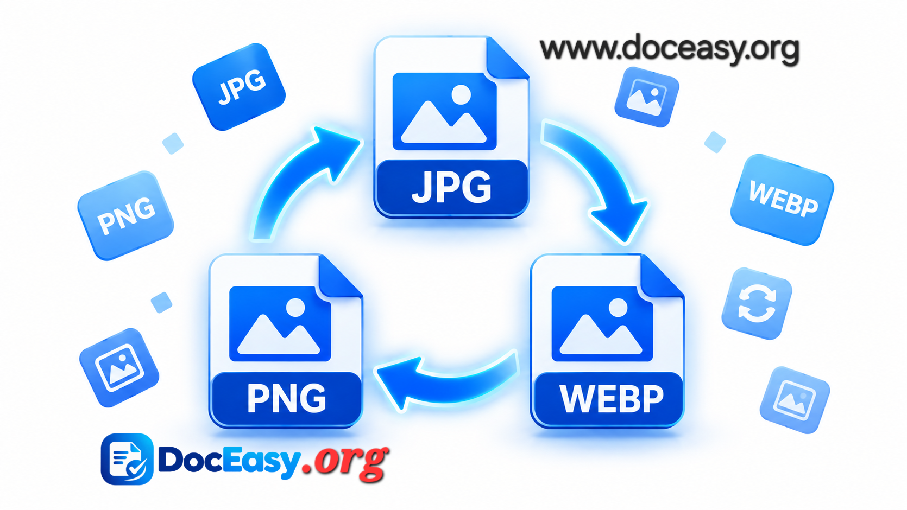

Image Format Converter
Convert images between JPG, PNG, and WEBP — 100% in your browser, nothing uploaded.
Complete Guide: Convert Images Between JPG, PNG & WEBP (2026)
Images are the most common file type on the internet — and also one of the most misunderstood. Every photo you take, every screenshot you capture, every logo you download comes in a specific format: JPG, PNG, or WEBP. Each has strengths and weaknesses, and choosing the wrong one can mean blurry photos, huge files that won't upload, or missing transparency.
The DocEasy Image Format Converter solves this in seconds. Upload any image, pick your target format, and get a converted file instantly — all inside your browser. No uploads to external servers, no signup, no watermark, no limits.

📷 [Place Demo Image: assets/images/image-converter-demo.jpg]How to Use — Quick Start
- Upload: Click the upload card or drag your image into it. JPG, PNG, and WEBP input formats are supported.
- Choose target format: From the dropdown, select JPEG, PNG, or WEBP.
- Convert: Click the green "Convert & Download" button.
- Done: Your converted image downloads instantly to your device.
1. What Is an Image Format?
An image format is a standardized way of storing image data in a file. The format defines how pixels are compressed, how colors are encoded, whether transparency is supported, and how metadata (like camera info or copyright) is stored. The three most common formats on the web are JPG, PNG, and WEBP.
When you take a photo with your phone, the camera app usually saves it as JPG. When you take a screenshot, the system typically saves it as PNG. When you download an image from a modern website, you often get WEBP (especially from Google services). Each format was designed for a different purpose, and each has trade-offs.
2. Why Convert Between Image Formats?
Different formats serve different purposes. Here are the most common reasons to convert:
- Website upload limits: Some sites only accept JPG, others only PNG.
- Exam & government portals: Indian exam forms usually require JPG with specific pixel dimensions and file size limits.
- Smaller file size: Converting to WEBP or JPG dramatically reduces file size for faster uploads.
- Transparency support: Only PNG and WEBP support transparent backgrounds.
- Lossless quality: Converting to PNG preserves every pixel perfectly.
- Email attachments: Gmail and Outlook have size limits — JPG is often the safest format.
- Print preparation: PNG is preferred for print because there's no compression artifact.
- Animation: WEBP supports animation (like GIF) at much smaller file sizes.
3. JPG vs PNG vs WEBP — Full Comparison
Choosing the right format is the single biggest decision for image quality and file size. Here's the full breakdown:
| Feature | JPG | PNG | WEBP |
|---|---|---|---|
| Compression | Lossy | Lossless | Both lossy & lossless |
| Transparency | No | Yes | Yes |
| Animation | No | No (APNG only) | Yes |
| File size | Small | Large | Smallest |
| Browser support | Universal | Universal | All modern |
| Best for | Photos, exams | Logos, screenshots | Websites |
| Colors | 16.7 million | 16.7 million + alpha | 16.7 million + alpha |
JPG (JPEG)
JPG is the oldest and most widely supported format. Its lossy compression can shrink files by 90% with minimal visible quality loss. Perfect for photographs, exam photos, and any image where file size matters more than transparency.
PNG
PNG uses lossless compression, meaning every pixel is preserved perfectly. It supports transparency, making it ideal for logos, icons, signatures, and screenshots. The downside is file size — PNG files are often 3-5× larger than equivalent JPGs.
WEBP
WEBP is Google's modern format, released in 2010. It supports both lossy and lossless compression, transparency, and animation — all with file sizes 25-35% smaller than JPG at the same visual quality. It's supported by all modern browsers (Chrome, Edge, Firefox, Safari 14+).
4. When to Use Each Format
Use JPG When:
- You're uploading a photo to a website, email, or social media
- You're submitting an exam form or government portal upload (most require JPG)
- File size matters and quality is acceptable at 80-90%
- You're sending images via WhatsApp, Telegram, or SMS
Use PNG When:
- You need transparent backgrounds (logos, product shots, signatures)
- You're working with screenshots containing text (PNG keeps text sharp)
- You need lossless quality for printing or editing
- You're saving digital art or graphics with sharp edges
Use WEBP When:
- You're publishing images on a modern website
- You want the smallest possible file size without quality loss
- You need animation at smaller size than GIF
- You're optimizing for Core Web Vitals (SEO benefit)
5. Lossy vs Lossless Compression
The two types of compression are fundamentally different:
Lossy Compression (JPG, WEBP)
Lossy compression permanently removes some image data to achieve dramatic size reductions. The algorithm identifies details the human eye is unlikely to notice — subtle color variations, tiny edges — and discards them. A 3 MB photo can become 200 KB with no visible difference.
The problem: every time you re-save a JPG, it loses a bit more quality. This is called "generation loss." For this reason, always keep the original file and convert from it — don't repeatedly re-convert.
Lossless Compression (PNG)
Lossless compression reduces file size without losing any data. The pixels you see are exactly the pixels that were originally saved. PNG achieves this through algorithms that find patterns in the image data — like repeated colors in a large background — and store them more efficiently. Lossless files are always larger than lossy ones at the same dimensions.
6. Transparency — The Hidden Difference
Transparency is a crucial feature that only PNG and WEBP support. When you save an image with a transparent background as PNG, the "transparent" pixels are marked as see-through. When placed on a colored background (like a website), those areas show the background color.
JPG does not support transparency. If you convert a transparent PNG to JPG, the transparent areas will automatically be filled with a solid color — usually white, but sometimes black depending on the tool. Our converter uses white, which is generally the safest default.
If you need transparency, always use PNG or WEBP, never JPG.
7. File Size Comparison — Real Numbers
Here's how the same 2000×1500 photo looks in each format:
| Format | File Size | Quality | Transparency |
|---|---|---|---|
| PNG (lossless) | ~4.5 MB | Perfect | Yes |
| JPG (quality 90) | ~850 KB | Excellent | No |
| JPG (quality 75) | ~450 KB | Very good | No |
| WEBP (quality 80) | ~280 KB | Excellent | Yes |
This shows why WEBP is winning: better compression than JPG with transparency support, at half the file size. As browser support has become universal (2020+), WEBP has become the default choice for modern websites.
8. Common Conversion Scenarios
PNG Screenshot → JPG (for Email)
Screenshots are usually saved as PNG. If you're emailing them, converting to JPG cuts file size by 70-85% with no visible quality loss (for images without fine text). Note that if the screenshot contains text, PNG will keep it sharper — only convert to JPG if file size is critical.
JPG Photo → PNG (for Editing)
If you plan to edit a photo, converting it to PNG first prevents further quality loss during saves. This is a common workflow: JPG → PNG → edit → export back to JPG or WEBP.
PNG Logo → WEBP (for Website)
Website logos are often 20-200 KB as PNG. Converting to WEBP cuts this by 40-60% without losing transparency. This speeds up your site's load time, improving SEO and user experience.
JPG → WEBP (for Modern Websites)
The single best optimization for any website: convert all your JPG photos to WEBP. You get 25-35% smaller files at the same visual quality, which directly improves your Core Web Vitals score — a ranking factor in Google Search.
Any Format → PNG (for Signatures)
Signatures need transparent backgrounds for exam forms and official documents. Convert any photo of your signature to PNG, then use our Signature BG Remover to clean up the background further.
9. Why Client-Side Conversion Is Better
Most online image converters upload your file to their servers, process it there, and return a download link. This has several problems:
- Privacy risk: Your image sits on a remote server, potentially logged or leaked.
- Waiting time: Upload + server processing + download takes 5-30 seconds for average files.
- File size limits: Most services cap uploads at 5-25 MB.
- Rate limits: Many allow only 2-5 conversions per hour for free users.
- Ads and watermarks: Some add watermarks or require watching ads.
DocEasy takes the opposite approach. Using the HTML5 Canvas API, we convert images inside your browser. The file never leaves your device. The conversion is instant. There are no limits. And you can even use the tool offline after loading it once.
You can verify this yourself: open the browser's Developer Tools Network tab, then convert an image. You'll see no outbound requests — no file upload, no server communication.
10. Best Practices for Image Conversion
- Keep the original: Never overwrite your original file. Always save the conversion as a new file.
- Convert once: Repeated conversions (JPG → PNG → JPG) cause cumulative quality loss with lossy formats.
- Use PNG for editing: If you plan to edit an image, convert it to PNG first for lossless intermediate saves.
- Use WEBP for the web: For any image displayed on a website, WEBP is the best choice today.
- Use JPG for exams: When a portal requires JPG, always use JPG (converting to PNG and renaming to .jpg won't work).
- Watch out for transparency: If your source has transparency, don't convert to JPG — the background will be lost.
- Optimize dimensions first: For smaller files, resize the image before converting. Use our Image Compressor & Resizer.
- Test on target platform: If converting for a specific website, verify the converted image actually works there.
11. Frequently Asked Questions
Q: Is this image converter really free?
Yes — 100% free, no signup, no watermark, no daily limits. All processing happens locally in your browser.
Q: Are my images uploaded to a server?
No. Everything runs locally in your browser using the HTML5 Canvas API. Your image never leaves your device.
Q: Does converting between formats reduce image quality?
PNG and WEBP support lossless conversion — perfect quality. When converting to JPG, high-quality compression (92%) is used, which is visually indistinguishable from the original for most images. Note that PNG → JPG loses transparency (transparent areas become white).
Q: Will converting a PNG with transparency to JPG work?
Yes, but the transparent areas will become white. JPG does not support transparency. If you need transparency, convert to PNG or WEBP instead.
Q: Can I convert HEIC (iPhone) photos?
HEIC is not natively supported by web browsers. Convert HEIC to JPG on your phone first (iPhone: Settings → Camera → Formats → Most Compatible), then upload here.
Q: What is WEBP and why should I use it?
WEBP is a modern format developed by Google. It produces files 25-35% smaller than JPG at the same visual quality, and supports transparency like PNG. All modern browsers support it. For websites, WEBP is the best choice.
Q: Can I convert multiple images at once?
Currently the tool processes one image at a time for maximum quality control. Batch conversion is on our roadmap.
Q: Is there a file size limit?
No hard limit — everything runs in browser memory. Very large files (50 MB+) may be slow on older devices, but modern phones and computers handle them fine.
Q: Can I use this on mobile?
Yes. The tool works on any modern Android, iOS, or iPad browser. No app installation required.
Q: Does the tool work offline?
Yes — after the page loads, you can disconnect from the internet and continue converting. Everything runs locally.
12. Popular Right Now — Trending Tools
- Image Compressor & Resizer — reduce image size for WhatsApp & email
- PAN Photo & Signature Resizer — exact specs for UTI/NSDL PAN applications
- ID Card Dual-Side Cropper — Aadhaar, PAN at ultra HD 300 DPI
- Document Scanner & OCR — extract text from scanned photos
- PDF Merge — combine multiple PDFs into one clean file
13. Related Tools You Might Need
If you found this useful, you may also like our Image Compressor & Resizer for reducing file size, our Background Remover for removing backgrounds, our Signature BG Remover for cleaning signature backgrounds, our Passport Photo Maker for 35×45 mm photos, our ID Card Cropper for Aadhaar/PAN at 300 DPI, and our JPG to PDF scanner to bundle images into PDFs.
14. Conclusion
Image format conversion is one of those small but essential tasks that everyone runs into — whether submitting exam forms, optimizing a website, or sharing photos with friends. With the DocEasy Image Format Converter, you can convert between JPG, PNG, and WEBP in seconds, without uploading anything, without signing up, and without limits.
Bookmark this page and use it whenever you need to convert an image — all in one place, all in your browser.